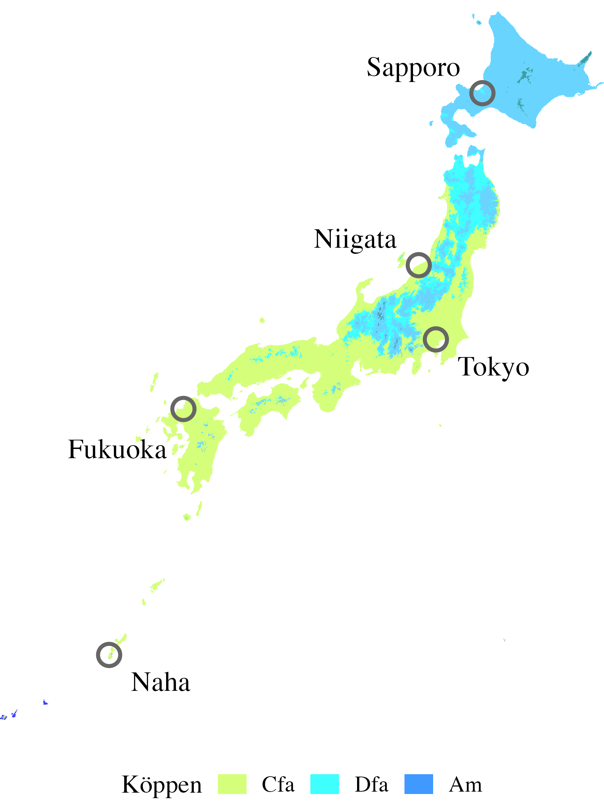

Heat wave classification
By exploiting the probabilistic structure of the MS model, we explore heat waves characterisation as prolonged periods during which the temperature stays in the hottest regime (the regime having the highest average temperature). More precisely, we propose a classification rule that considers a period as a heat wave if the probability of being in the $K$-th regime is greater than the probability of being in any other regime for at least three consecutive days. In formulas, we consider a period $[t,\, t+n-1]$ as heat wave if $$n \geq 3 \;\,\, \text{and}\;\,\, \hat\pi^{t+i}_K > \hat\pi^{t+i}_k \quad \forall\, k \in \{1,\ldots,K-1\},\; \forall\, i \in \{0, 1, \ldots, n-1\}.$$ where $\pi^t_k$, for $k =1, \ldots, K$, are the filtered state probabilities introduced in MS Model. These classification rules can be used to describe the frequency and duration of heat waves over time Perkins-Kirkpatrick and Lewis (2020).
Data and study area
We analyse the maximum daily temperatures (in Celsius) from May to September, spanning 1995 - 2024, of the stations Sapporo, Niigata, Tokyo, Fukuoka, Naha, as extracted from the Japan Meteorological Agency (JMA).
The table below reports the geographical coordinates, altitude and climate type according to the Köppen-Geiger classification (KG, Beck et al., 2023). According to the Köppen-Geiger classification, the cities considered belongs to the climatic subgroups: (i)Humid Continental (Dfb); (ii) Humid Subtropical (Cfa); (iii) ropical monsoon (Am). Although most of the selected sites fall within the same climatic subgroup according to the KG classification, there are specific and evident climatic differences among them (see an example from JMA available at the link). Namely, cities located on the eastern coast of Japan exhibit distinct climatic characteristics compared to those facing the Sea of Japan Ito el (2022). Similarly, although Naha (in the Okinawa region) is classified as having a humid subtropical climate, it is influenced by features typically associated with tropical monsoonal climate conditions.
| City | Latitude | Longitude | Altitude | KG |
|---|---|---|---|---|
| Sapporo | 43°03.6′ | 141°19.7′ | 17.4 m | Dfb |
| Niigata | 37°53.6′ | 139°01.1′ | 4.1 m | Cfa |
| Tokyo | 35°41.5′ | 139°45.0′ | 25.2 m | Cfa |
| Fukuoka | 33°34.9′ | 130°22.5′ | 2.5 m | Cfa |
| Naha | 26°12.4′ | 127°41.2′ | 28.1 m | Cfa/Am |

Model evaluation
We run the models for $K \in {2,3,4,5}$ and all the stations described above, under the settings specified in MS Model. However, some few stations required refinements in the prior settings, in particular reducing the scale hyperparameter of $\sigma_year$ and a the location hyperparameter of $\delta_k$, for $k in \{1, \ldots, K\}$. Model diagnostics do not reveal problems, the chains mix well, the values of $\hat R$ are very close to one for all the model parameters and the $n_eff$ are large enough to carry out statistical inference.| K | Sapporo | Niigata | Tokyo | Fukuoka | Naha | |
|---|---|---|---|---|---|---|
| 2 | LOOIC | 23489.8 | 22541.6 | 14966.4 | ||
| ΔELPD (SE) | - | - | - | |||
| 3 | LOOIC | 23134.5 | 22088.2 | 14128.8 | ||
| ΔELPD (SE) | −72.9 (15.1) | −92.7 (17.4) | −215.6 (26.7) | |||
| 4 | LOOIC | 23003.7 | 21983.5 | 13833.3 | ||
| ΔELPD (SE) | −7.5 (6.4) | −40.3 (11.1) | −67.8 (17.4) | |||
| 5 | LOOIC | 22988.8 | 21902.8 | 13697.7 | ||
| ΔELPD (SE) | 0.0 | 0.0 | 0.0 |